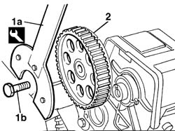
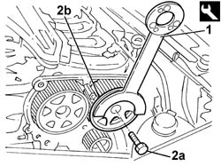
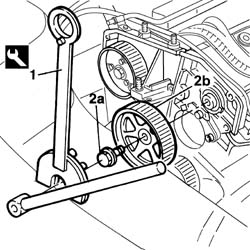
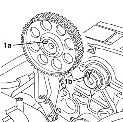
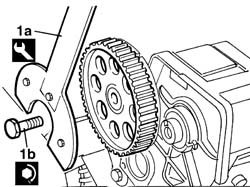

1032B40 toothed-driven pulley (one) - r + r with timing belt removed
- Path
- Procedures > 10 ENGINE > 1032 TIMING SYSTEM > 1032B BELT TIMING SYSTEM > 1032B40 toothed-driven pulley (one) - r + r with timing belt removed
- Kind
- repair procedure (removal / refitting; the operation number is the code)
- Applies to
- all engines; all production periods
- Interactive page
- https://sloeber94.github.io/elrnDB-fDbl/en/#/2584195
Applies to: all engines; all production periods
 Removing
Removing
 Refitting
Refitting1. Use tool (1a) to prevent the pulley turning, then unscrew retaining bolt (1b).
 | Name | Country |
|---|---|---|
1a | Support for counter-torque | 1.860.831.000 |
2. Remove the driven pulley.

Applies to: all engines; all production periods
Removing
Refitting1. Lock the rotation of the pulley involved using the tool fitted with the counter-torque tool.
| Name | Country |
|---|---|---|
1 | Pulley rotation wrench | 1.860.776.000 |
2. Undo the bolt (2a) and remove the timing driven pulley (2b).

Applies to: all engines; all production periods
Removing
Refitting1. Use the special tool to prevent the pulley from turning.
2. Unscrew retaining bolt (2a) and remove pulley (2b) from its seat on the camshaft.
| Name | Country |
|---|---|---|
1 | Support for counter-torque | 1.860.831.000 |
| Name | Country |
|---|---|---|
1 | Counter-torque | 1.860.831.001 |

Applies to: all engines; all production periods
Refitting
RemovingFit the driven pulley.
1. The pulley can only be fitted in one position, with the reference (1a) aligned with the mark (1b) on the camshaft.

Applies to: all engines; all production periods
Refitting
RemovingRefit the toothed driven timing pulley.
Tighten the bolt securing the toothed driven pulley using the tool for counter-torque.
 | Fastening | Component | Ø | Value (daNm) |
|---|---|---|---|---|
- | Bolt | TIMING GEAR DRIVEN PULLEYS | M12 | 12 |
| Name | Country |
|---|---|---|
- | Pulley rotation wrench | 1.860.776.000 |
Applies to: all engines; all production periods
Refitting
RemovingFit the pulley into its seat on the camshaft.
Tighten the fixing bolt and, using the tool, lock the pulley and tighten the bolt to torque.
| Name | Country |
|---|---|---|
- | Support for counter-torque | 1.860.831.000 |
| Name | Country |
|---|---|---|
- | Counter-torque | 1.860.831.001 |
| Fastening | Component | Ø | Value (daNm) |
|---|---|---|---|---|
- | Bolt | TIMING GEAR DRIVEN PULLEYS | M12 | 12 |
Applies to: all engines; all production periods
1. Use the tool (1a) to lock the rotation of the pulley and tighten the fixing bolt (1b) to torque.
| Name | Country |
|---|---|---|
1a | Support for counter-torque | 1.860.831.000 |
| Fastening | Component | Ø | Value (daNm) |
|---|---|---|---|---|
1b | Bolt | TIMING GEAR DRIVEN PULLEYS | M10 x 1.25 | 7 |

Topics that link to this page (15)
- 0510A30 cam lift - check with cam cover(s) removed
- 1016B20 lh cylinder head extension - replace gasket
- 1016B22 lh cylinder head extension - r r with timing belt removed - replace gasket
- 1016B24 rh cylinder head extension - replace gasket
- 1016B26 rh cylinder head extension -r r with timing belt removed -replace gasket
- 1016C10 cylinder head - r + r and replace gasket
- 1032B52 toothed driven pulley (one) - r + r
- 1032B53 driven toothed pulley (one) - r r for versions with air conditioner
- 1032D34 timing system guard assemblies - r + r
- 1036B10 overhead camshaft - r r on vehicle
- 1036B30 overhead camshaft front cover - r + r and replace seals with timing belt removed
- 1036B36 front crankshaft oil seal-r r with timing belt removed
- 1036G10 camshaft controlling exhaust valves in top head - r + r with top head removed - includes replacement of top head
- 1036G20 camshaft controlling intake valves in top head - r + r with top head removed - includes replacement of top head if necessary
- 1036G30 front oil seal of camshaft of one l/h or r/h top head - replace with timing belt removed